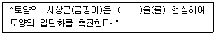
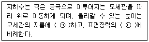
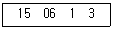

유기농업기사 (2012-08-26 기출문제)
1과목: 재배원론
1. 가장 높은 적산온도를 필요로 하는 작물은?
- 밀
- 옥수수
- 벼
- 메밀
(정답률: 50%)

2. 다음 중 광의 보상점이 가장 높은 식물은?
- 단풍나무
- 너도밤나무
- 소나무
- 측백나무
(정답률: 56%)
3. 다음의 종자 품질을 결정하는 여러 가지 조건 중에서 내적 조건에 해당하는 것은?
- 종자의 순도
- 종자의 수분함량
- 종자의 색택과 냄새
- 종자의 발아력
(정답률: 47%)
4. 감자의 휴먼타파를 위한 지베렐린의 처리 방법은?
- 절단 후 250 ~ 500 ppm 지베렐린 수용액에 24시간 침지
- 절단 후 250 ~ 500 ppm 지베렐린 수용액에 30 ~ 60분 침지
- 절단 후 2 ~ 5 ppm 지베렐린 수용액에 24시간 침지
- 절단 후 2 ~ 5 ppm 지베렐린 수용액에 30 ~ 60분 침지
(정답률: 70%)
5. 다음 중에서 생육 최저온도가 가장 낮은 작물은?
- 밀
- 호밀
- 보리
- 귀리
(정답률: 50%)
6. 토양 통기를 조장하기 위한 재배적 조치가 아닌 것은?
- 답전윤환 재배를 실시한다.
- 객토를 한다.
- 중·습답에서는 휴립재배를 한다.
- 파종할 때 미숙퇴비를 종자위에 두껍게 덮지 않는다.
(정답률: 36%)
7. 수해(水害)에 관한 설명이 바른 것은?
- 수수와 옥수수는 침수에 강한 작물이다.
- 동진벼와 추청벼는 침수에 강한 품종이다.
- 벼의 수잉기~출수개화기에는 침수에 강하다.
- 벼가 관수될 때 수온이 낮으면 높은 경우보다 피해가 더 크다
(정답률: 59%)
8. 어느 작물의 요수량이 500 이라면 단위중량 1g 의 건물(乾粅)을 생산하는데 소비된 물의 양은?
- 0.5kg
- 5kg
- 50kg
- 500kg
(정답률: 53%)
9. 종자 저온 춘화처리의 과정과 효과가 맞지 않는 것은?
- 산소의 공급니 필요하다.
- 종자가 건조하지 않아야 한다.
- 광에 노출시키지 않아야 한다.
- 생장점에 탄수화물이 공급되어야 한다.
(정답률: 70%)
10. 벼의 생육기간 중 냉해에 의해 출수가 가장 지연되는 시기는?
- 활착기
- 분얼기
- 유수형성기
- 출수기
(정답률: 알수없음)
11. 방사성 동위원소가 방출하는 방사선 중에서 가장 현저한 생물적 효과를 가지는 것은?
- 알파선
- 베타선
- 감마선
- 엑스선
(정답률: 90%)
12. 재배기간 동안 상토의 pH에 영향을 주는 주요 요인이 아닌 것은?
- 상토와 상토 구성분 자체에 포함된 석회석과 같은 식재전 물질
- 관개수의 알칼리도
- 재배기간 동안 사용된 비료의 산도/염기도
- 재배기간 동안의 평균 기온
(정답률: 79%)
13. 풍해의 기게적 장해에 해당 되는 것은?
- 벼에서 수분 및 수정이 저해되어 불임립(不稔粒)이 발생하고, 상처에 의해 각종 병 등이 발생한다.
- 상처가 나면 호흡이 증대되어 체내의 양분 소모가 증대 된다.
- 증산이 커져서 식물이 건조해진다.
- 기공이 닫혀 광합성이 감소한다.
(정답률: 50%)
14. 일반적으로 과수재배에서 환상박피를 하는 원리로 가장 적당한 것은?
- 전류작용의 촉진
- 수분 공급의 조절
- C-N율의 증대
- 내병성의 증대
(정답률: 64%)
15. 1m2의 현미 무게가 1kg이고 이때 현미의 수분함량이 17%이다. 수분함량이 15%일 때 10a의 현미 수량은?
- 약 293kg
- 약 488kg
- 약 512kg
- 약 976kg
(정답률: 20%)
16. 경운(耕耘)의 효과에 대한 설명으로 옳은 것은?
- 건토효과는 밭보다 논에서 크게 나타나기 쉽다.
- 유기물 함량이 높은 점질토양은 추경(秋耕)을 하지 않는 것이 좋다.
- 강수량이 많은 사질토양은 추경을 하는 것이 유리하다.
- 자갈논에서는 천경(淺耕)보다 심경(深耕)하는 것이 좋다.
(정답률: 36%)
17. 다음 작물 중 땅속줄기(地下莖)를 종묘로 이용하는 것은?
- 생강
- 토란
- 마늘
- 마
(정답률: 80%)
18. 토양보호와 관련된 작물분류를 올바르게 한 것은?
- 수식성작물(受蝕性作物) - 콩과목초
- 토양수탈작물(土壤收奪作物) - 채소
- 토양조성작물(土壤造成作物) - 과수
- 토양보호작물(土壤保護作物) - 목초
(정답률: 90%)
19. 혼파의 이점이 될 수 없는 것은?
- 화본과 목초와 콩과 목초가 섞이면 가축의 영양상 유리하다.
- 상번초와 하번초가 섞이면 공간을 효율적으로 이용할 수 있다.
- 혼파에 의해서 토양의 비료 성분을 더욱 효율적으로 이용할 수 있다.
- 화본과 목초가 고정한 질소를 콩과목초가 이용하므로 질소비료가 절약된다.
(정답률: 54%)
20. 생력재배에 크게 공헌한 제초제로 처음으로 사용된 생장조절제는?
- 옥신 (Auxin)
- 지베렐린 (Gibberellin)
- 시토키닌 (Cytokinin)
- 아브시스산 (Abscissic acid)
(정답률: 67%)
2과목: 토양비옥도 및 관리
21. 토양조사에 있어서 매우 중요한 일의 하나가 토양단면의 형태조사이다. 다음 중 단면을 만들 때 고려 해야 할 사항으로 옳은 것은?
- 시갱(pit)을 하는데 깊이는 일반적으로 100cm를 기준으로 한다.
- 시갱을 하기 힘든 곳에서는 기존의 자연적 단면 또는 도로를 만들때 들어난 단면을 이용하여 조사해서는 안 된다.
- 토양생성인자를 고려하여 될 수 있는 한 대표적인 장소를 선정하여 시갱한다.
- 시갱할 때 지하수위가 높아 물이 고이는 곳은 수면위로 들어난 곳만 조사한다.
(정답률: 70%)
22. 토양생성작용 중 일반적으로 한냉습윤지대의 침엽수림 식생환경에서 생성되는 작용은?
- 포드졸화 작용
- 라테라이트화 작용
- 글라이화 작용
- 염류화 작용
(정답률: 80%)
23. 다음 중 칼리 함량이 많은 장석이 염기물질의 신속한 용탈작용을 받았을 때 가장 먼저 생성되는 점토광물은?
- illite
- kaolinite
- vermiculite
- chlorite
(정답률: 70%)
24. 다음 중 노후화답의 작토층에 특히 부족한 성분은?
- K
- Fe
- Mn
- Si
(정답률: 69%)
25. 다음중 산성 토양에 석회물질을 사용하여 얻을 수 있는 혜택과 가장 거리가 먼 것은?
- Ca 성분 공급효과
- 토양산도 교정효과
- 토양생물의 활성증진 효과
- 토양교질물의 변두리 음전하량 증가효과
(정답률: 85%)
26. 다음 중 토양유기물의 기능으로 틀린 것은?
- 토양의 보수력을 감소시킨다.
- 토양의 입단화를 향상시킨다.
- 토양의 양이온교환용량(CEC)을 증가시킨다.
- 식물의 생육에 필요한 영양분을 공급해 준다.
(정답률: 85%)
27. 다음 ( )에 들어갈 내용으로 가장 적합한 것은?

- 균사
- 항생물질
- 황세균
- 뿌리혹박테리아
(정답률: 67%)
28. 다음 중 토양 입단을 분산시키거나 수화시 가장 많은 물분자를 주변에 가지는 이온은?
- Na 이온
- Ca 이온
- Fe 이온
- K 이온
(정답률: 84%)
29. 다음 중 신토양분류법의 분류체게에 있어 6단계에 해당하지 않는 것은?
- 목 (order)
- 태 (shape)
- 통 (series)
- 대군 (great group)
(정답률: 알수없음)
30. 다음 중 점토광물의 일반적 구조에 관한 설명으로 가장 적합한 것은?
- 규반질 광물로서 Si4+ 나 K+ 가 고정된 구조
- 2:1 격자형 광물로서 알루미나판 2개가 결합된 구조
- 토양생성과정에서 재합성된 1차 광물의 구조
- 판상격자를 가지고 있으며 규산판과 알루미나판이 결합된 구조
(정답률: 70%)
31. 다음 중 우리나라 밭토양에 대한 일반적 특성으로 옳은 것은?
- 구릉지와 대지가 총 60%로서 가장 많은 분포를 차지한다.
- 화산회토양은 제주에 분포하며, 배수성이 좋아 수량이 높다.
- 양분 천영공급량은 적고, 유기물분해는 논토양 보다 느리다.
- 세립질 토양이 전면적의 48% 정도를 차지하며, 이들 토양은 투수성이 불량하다.
(정답률: 37%)
32. 다음 중 토양수분 퍼텐셜에 관한 설명으로 옳은 것은?
- 질량 기준으로 표시하면 그 단위는 Ｊ/kg이 된다.
- 부피 기준으로 표시하면 그 단위는 길이 단위가 된다.
- 무게 기준으로 표시하면 그 단위는 압력단위가 된다.
- 토양수분 퍼텐셜 차이에 의해 주로 흐르는 속도가 결정 된다.
(정답률: 알수없음)
33. 다음 중 토양비옥도 평가방법으로 적합하지 않은 것은?
- 토양검정을 통한 유효양분 분석
- 시비권장량 결정을 위한 재배시험
- 지리적정보시스템을 통한 토양 분류
- 작물요구 영양소 결정을 위한 식물체 분석
(정답률: 60%)
34. 다음 중 물에 의한 토양 침식에 영향을 끼치는 주요 인자가 아닌 것은?
- 경사장과 경사각
- 강우량과 강우강도
- 해발 높이와 일사량
- 수분 침투율과 토양구조 안정성
(정답률: 73%)
35. 다음 중 포양 풍식과 수싯현상에 공통으로 작용하는 두 가지 과정으로 옳은 것은?
- 비산(splash) - 약동(saltation)
- 분리(datachment) - 이탈(transfer)
- 약동(saltation) - 분리(datachment)
- 이탈(transfer) - 비산(splash)
(정답률: 알수없음)
36. 다음 중 토양생물 개체수(/m2)가 많은 것부터 적은 순서로 올바르게 나열한 것은? (단, 토양 15cm 깊이 기준이다.)
- 사상균 ＞ 세균 ＞ 방선균 ＞ 조류
- 세균 ＞ 방선균 ＞ 선충 ＞ 조류
- 방선균 ＞ 세균 ＞ 사상균 ＞ 조류
- 세균 ＞ 방선균 ＞ 사상균 ＞ 조류
(정답률: 73%)
37. 다음 중 탈질작용에 관한 설명으로 틀린 것은?
- 혐기적인 환경조건에서도 형성된다.
- 토양 내에 있는 탈질균에 의한 반응이다.
- 물이 담겨져 있지 않은 논토양에서 주로 일어난다.
- 대부분의 토양에서 N2까지 환원되기 전에 N2O 의 형태로 가장 많이 손실된다.
(정답률: 60%)
38. 다음은 토양 수분의 이동에 관한 설명이다. ( ) 안에 들어갈 내용으로 옳은 것은?

- ㉠ 비례, ㉡ 2배
- ㉠ 반비례, ㉡ 2배
- ㉠ 비례, ㉡ 3배
- ㉠ 반비례, ㉡ 3배
(정답률: 47%)
39. 탄소함량이 40%이고, 질소함량이 0.5%인 볏집 100kg을 C/N율이 10이고, 탄소 동화율 이 30%인 미생물이 분해시킬때 식물이 질소기아를 나타내지 않게 하려면 몇 kg의 질소를 가하여 주어야 하는가?
- 0.1kg
- 0.3kg
- 0.5kg
- 0.7kg
(정답률: 42%)
40. 다음 중 식물조직이 토양 속에서 분해과정을 거쳐 부식으로 합성될 때 함량이 증가하는 물질은?
- 셀롤로오스
- 헤미셀롤로오스
- 단백질
- 탄수화물
(정답률: 46%)
3과목: 유기농업개론
41. 유기농자재에서 병해충 관리를 위해 사용하는 자재 중 식물에서 추출한 자재는?
- 님제제
- 파라핀유
- 보르도액
- 벤토나이트
(정답률: 70%)
42. 동물성 부산물 중 유기농허용자재가 아닌 것은?
- 가축 및 모피제품 부산물
- 육골분
- 혈분
- 깃털분
(정답률: 50%)
43. 다음은 퇴비화 과정 중 부숙되기 위한 충분한 열이 발생되지 않는 경우의 원인과 해결법이다. 그 연결이 틀린 것은?
- 지나치게 건조함 - 젖은 퇴비재료의 투입
- 지나치게 습윤함 - 마른 재료를 투입하거나 다시 혼합
- 추운 날씨와 작은 규모의 퇴비더미 - 퇴비더미 규모를 키우거나 퇴비재료를 더 혼입
- pH가 5 이하임 - 산성을 띠는 재료를 투입
(정답률: 79%)
44. 초지는 사료를 생산하는 기능뿐 아니라 토양을 보존하는 효과가 높아 친환경 농업과 유기축산에서 중요하다. 초지의 토양보존 효과로 거리가 먼 것은?
- 토양 유기물의 증가
- 두과목초에 의한 질소 고정
- 토양의 홑알구조 형성
- 토양의 침식방지
(정답률: 84%)
45. 토양에 유기물이 풍부해야 하는 이유로 틀린 것은?
- 토양미생물이 많아지기 때문에
- 흙을 기름지고 비옥하게 만들기 때문에
- 농작물 생육에 좋은 토양환경을 만들어 주기 때문에
- 화학비료. 광물질 비료보다 유기물 비료가 싸기 때문에
(정답률: 93%)
46. 병충해의 방제에 있어서 동반작물을 같이 재배하면 병충해를 경감시키고 잡초를 방제할 수 있다. 다음 작물과 동반작물의 조합으로 적절하지 않은 것은?
- 완두콩 - 당근. 양배추. 주키니 호박
- 오이 - 완두. 콜라비. 파. 옥수수
- 양파 - 당근. 박하. 딸기
- 상추 - 강낭콩. 감자. 파. 당근
(정답률: 64%)
47. 퇴비의 장점이 아닌 것은?
- 발효과정 동안 잡초 및 병균 사멸
- 산성토양의 산도 조절
- 토양 유기물 함량 증가
- 퇴비생산시 노동력 절감
(정답률: 79%)
48. 보르도액의 사용시 방제에 작용되는 작물과 해당 병해명의 연결로 틀린 것은?
- 감귤 - 궤양병
- 포도 - 새눈무늬병
- 감자 - 무름병
- 벼 - 노균병
(정답률: 54%)
49. 연작의 해가 가장 심한 작물로만 나열된 것은?
- 벼. 수수
- 고구마. 삼
- 당근. 양파
- 수박. 토마토
(정답률: 77%)
50. 유기농산물 생산을 위한 병해충 관리방법에서 병해충 방어막으로서의 다양한 생태계 창출을 위한 대안으로 틀린 것은?
- 윤작체계를 확립함으로서 단작체계에서 재배되는 작물보다 병해충 피해를 줄일 수 있다.
- 주작물 사이사이에 다른 종류의 간작을 실시하면 그곳이 천적의 서식공간으로 활용 되어 병해충제어에 기여한다.
- 익충들이 특히 좋아하는 유인작물을 경작지 둘레에 울타리 같이 재배하여 생태계의 섬을 만들어 줌으로서 병해충제어 효과를 높인다.
- 경작지 내외의 잡초를 깨끗하게 제거하기 위하여 제초제를 살포함으로써 병균이나 해충의 서식처를 원천적으로 봉쇄해 버리는 것이 좋다.
(정답률: 84%)
51. 시설 내 이산화탄소 환경에 관한 설명으로 틀린 것은?
- 해가 뜬 후 시설 내 이산화탄소 농도는 급격히 감소한다.
- 밤에도 이산화탄소가 계속 방출되어 시설 외부보다 농도가 상승한다.
- 이산화탄소의 농도는 식물의 위치에 따라 차이가 있다.
- 낮에는 잎. 줄기가 무성한 부분에서 이산화탄소의 농도가 높고. 공기가 움직이는 통로 부분은 농도가 낮다.
(정답률: 43%)
52. 우리나라에서 친환경 농업육성법이 제정 공포된 년도는?
- 1977년
- 1998년도
- 1997년도
- 1999년도
(정답률: 64%)
53. 유기벼 인증을 받기 위한 농가가 실천할 재배방법으로 틀린 것은?
- 농약 살포가 필요 없을 정도로 충해에 강한 내충성 GMO 품종을 선택한다.
- 외부투입 물자를 최소화 하여 농업생태계를 보호한다.
- 유기농업으로 재배. 생산된 종자를 사용한다.
- 두과작물. 녹비작물을 재배하여 토양유기물을 증대시킨다.
(정답률: 82%)
54. 유기농의 목적으로 가장 거리가 먼 것은?
- 건강한 농업생태계를 유지하기 위하여
- 장기적으로 토양비옥도를 유지하기 위하여
- 미생물을 포함한 농업체계 내의 생물적 순환을 억제하기 위하여
- 농업기술로 인해 발생되는 오염을 피하기 위하여
(정답률: 91%)
55. 벼의 유기재배에서 벼멸구 피해를 줄이기 위한 실용적 방법이 아닌 것은?
- 오리를 방사한다.
- 논 주위에 유아등을 설치한다.
- 친환경농자재를 활용한다.
- 1포기(株) 당 묘수(苗數)를 되도록 많게 하여 이앙한다.
(정답률: 50%)
56. 시설(green house) 설치시 외부 피복자재의 구비조건으로 적합하지 않는 것은?
- 열전도율이 커야 함
- 광 투과율이 높아야 함
- 열선 투과율이 낮아야 함
- 보온성이 좋아야 함
(정답률: 39%)
57. 유기농업에서 허용되지 않는 것은?
- 유기합성농약을 사용한 제초
- 자가농가에서 1마리 소를 기르며 발생한 우분을 호기성 발효에 의해 제조하여 사용
- 오리제초 수도작에서 얻은 볏짚을 피복재료로 활용
- 돼지와 닭을 유기사료를 지급 자유방사 시켜 사육
(정답률: 67%)
58. 친환경농산물의 표시 문자로 틀린 것은?
- 유기농산물
- 유기비료농산물
- 유기농산물(전환기)
- 무농약재배농산물
(정답률: 82%)
59. 유기축산물 생산을 위한 가축의 사양관리 조건으로 틀린 것은?
- 밀집사육이 허용되지 않는다.
- 번식돈은 군사사육을 원칙으로 한다.
- 육성돈은 케이지 사육을 허용한다.
- 산란계는 인증기관이 부여한 범위 내에서 자연일조시간을 인공광으로 연장할 수 있다.
(정답률: 85%)
60. 유기사료 생산에 대한 설명으로 가장 적합한 것은?
- 유기사료는 일반 작물과 같은 방법으로 재배하여도 무방하다.
- 유기사료는 일반 작물과 같은 방법으로 재배하고 살충제만 사용하지 않으면 된다.
- 유기사료는 일반 작물과 같은 방법으로 재배하고 제초제만 사용하지 않으면 된다.
- 유기사료는 유전자 조작이 되지 않은 종묘를 일정기간 유기적으로 관리한 토양에서 합성비료와 합성농약을 사용하지 않고 생산해야 한다.
(정답률: 79%)
4과목: 유기식품 가공.유통론
61. 친환경농산물 인증 시 인증절차로 옳은 것은?
- 인증신청 → 생산출하과정조사 → 인증심사 → 심사결과통보 → 시판품조사
- 인증신청 → 인증심사 → 시판품조사 → 심사결과통보 → 생산출하과정조사
- 인증신청 → 시판품조사 → 생산출하과정조사 → 인증심사 → 심사결과통보
- 인증신청 → 인증심사 → 심사결과통보 → 생산출하과정조사 → 시판품조사
(정답률: 60%)
62. 포장 재료를 선정하기 위해 고려할 사항으로 틀린 것은?
- 수분함량이 많은 식품의 포장에는 내수성이 있는 재료를 선택한다.
- 가열살균을 하는 제품의 경우 고온에서도 포장 재료의 특성변화가 적은 것을 선택한다.
- 지방을 많이 함유하는 식품은 기체투과도가 높은 재료를 선택한다.
- 냉동식품은 저온에서도 물리적 강도변화가 적은 포장 재료를 선택한다.
(정답률: 83%)
63. 인증농산물의 정보를 검색할 때 아래의 인증번호의 코드 구분 중 시군코드는?

- 15
- 06
- 1
- 3
(정답률: 70%)
64. 1%는 몇 ppm인가?
- 100
- 1000
- 10000
- 100000
(정답률: 82%)
65. 유기과채류 가공식품 제조방법으로 틀린 것은?
- 과체류는 비타민 등 영양순 손실이 적게 가공하는 것이 좋다.
- 채소류는 알칼리성이기 때문에 산성 첨가물을 최대한 사용하여 가공하는 것이 좋다.
- 잼류는 팩틴. 산. 당분이 적당한 원료를 사용하여 가공하는 것이 좋다.
- 부패 및 변질이 잘되지 않는 원료를 사용하여 가공하는 것이 좋다.
(정답률: 알수없음)
66. 유기농식품의 판매가격이 소비자의 지불의사 가격보다 높게 형성되어 있는 경우. 그 문제점을 해소시키는 방안으로 적절하지 않은 것은?
- 생산비용 절감
- 물류비용 절감
- 직불금 단가 상향 조정
- 유통마진율 상향 적용
(정답률: 알수없음)
67. 유기농산가공품 품질인증 심사 기준상 검사 및 추적검사와 관련이 없는 사항은?
- 매출기록 장부 및 영수증 구비 여부
- 먹는물 수질 기준에 적합 여부
- 재고관리 대장 구비 여부
- 가공식품생산 관련해서 정부에서 검사받는지 여부
(정답률: 39%)
68. 유기농산물 유통의 주요 기능과 거리가 먼 것은?
- 표준화. 등급화. 시장정보 등 거래조성 기능
- 유기농산물 생산기반 조성 기능
- 구매. 판매 등 소유권 이전 기능
- 운송. 저장, 가공 등의 물질적 유통 기능
(정답률: 54%)
69. 동물. 식물. 미생물의 다양한 분비물에 존재하며. 특히 달걀에서 많이 생산되는 것으로서 그람양성세균의 세포벽을 분해하기 때문에 그람양성세균에 항균력이 있는 것은?
- 키토산 (chitosan)
- 프로타민 (protamin)
- 폴리라이신 (polylysine)
- 라이소자임 (lysozyme)
(정답률: 56%)
70. 시험물질을 시험동물에게 그 수명의 1/10 정도의 기간에 걸쳐 연속 경구투여하면서 나타나는 독성을 관찰하는 시험 방법은?
- 급성독성 시험
- 만성독성 시험
- 아급독성 시험
- 변이원성 시험
(정답률: 36%)
71. 고전압펄스법에 의한 미생물 살균 시 위생상 문제점은?
- 액상식품의 부분적인 현탁현상
- 유해물질의 식품유입으로 인한 안전성
- 높은 에너지 사용량
- 처리시간의 장기화
(정답률: 55%)
72. 농산물 표준규격관리의 필요성에 대한 설명으로 틀린 것은?
- 품질에 따른 가격차별화로 정확한 정보제공 및 공정거래 촉진
- 유통의 효율성 제고
- 선별. 포장출하로 소비지에서의 쓰레기 발생 억제
- 수송. 적재 등 유통비용 증가
(정답률: 알수없음)
73. 방사성 물질의 식품오염과 관련한 설명 중 옳은 것은?
- 빗물. 수돗물. 우물물 중 방사성 물질의 오염을 받기 쉬운 것은 수돗물이다.
- 어패류의 경우 방사성 물질이 먹이 사슬을 통해 생물 농축되지 않는다.
- 인체에 가장 피해를 많이 주는 것은 반감기가 짧은 물질이다.
- 식품오염과 관련된 핵종으로 위생상 문제가 되는 것은 90Sr 137Cs 131I 등이다.
(정답률: 75%)
74. 식품공전상 냉장 온도는?
- 0 ~5 °C
- 0 ~ 10 °C
- 0 ~ 15 °C
- 5 ~ 15 °C
(정답률: 60%)
75. 국립농산물품질관리원이 규정하는 농산물 표준규격에 근거하여 유기농 토마토 포장재에 등급규격을 표시할 때 잘못된 등급 규격은?
- 특
- 상
- 중
- 보통
(정답률: 58%)
76. GMO에 대한 설명으로 틀린 것은?
- 생물의 유전자 중 유용한 유전자만 취하여 다른 생물체의 유전자와 결합시키는 등의 유전자재조합 기술을 활용한다.
- 유전자재조합식품은 유전자재조합기술을 활용하여 재배. 육성된 농축수산물 등을 원료로 하여 제조. 가공한 식품이다.
- 전세계적으로 옥수수의 개발 품목수가 가장 많다.
- 유전자변형농산물의 생산. 유통과정 중 비의도적인 혼입을 허용하지 않으므로, 별도의 혼입허용치는 설정되어 있지 않다.
(정답률: 알수없음)
77. 균 1개가 30분마다 분얼하는 경우 5시간 후에는 몇 개가 되는가?
- 10
- 512
- 1024
- 2048
(정답률: 알수없음)
78. 호수의 부영양화를 발생시키는 원인은?
- 인산염, 질산염 등의 물질
- 대장균군
- 철이나 망간 등과 같은 금속물질
- 경도가 높은 물
(정답률: 90%)
79. 김치의 식품가치에 중요한 성분은?
- 단백질. 젖산균
- 젖산균. 식이섬유
- 식이섬유. 지질
- 지질. 에너지
(정답률: 82%)
80. 미생물의 가열살균 방법이 아닌 것은?
- 원적외선 살균
- 자외선 살균
- 마이크로파 살균
- 전기저항가열 살균
(정답률: 55%)
5과목: 유기농업관련 규정
81. 유기식품의 생산. 가공. 표시. 유통에 관한 Codex 가이드라인에서 유기식품 생산에 허용되는 토양의 비옥화 및 토질개선에 사용하는 물질 중 천연 인광석의 성분요건 및 사용조건으로 옳은 것은?(오류 신고가 접수된 문제입니다. 반드시 정답과 해설을 확인하시기 바랍니다.)
- 인증기관의 확인 필요하며, 카드륨이 90mg/kg P2O5 를 초과하지 않아야 함
- 인증기관의 확인 필요하며, 카드륨이 120mg/kg P2O5 를 초과하지 않아야 함
- 인증기관의 확인 필요하지 않으며, 카드륨이 90mg/kg P2O5 를 초과하지 않아야 함
- 인증기관의 확인 필요하며 않으며, 카드륨이 120mg/kg P2O5 를 초과하지 않아야 함
(정답률: 60%)
82. 다음 중 친환경농업육성법령상 친환경 농산물의 표시에 있어 표시문자로 적합하지 않는 것은?
- 유기재배농산물
- 무공해농산물
- 유기축산물
- 무농약농산물
(정답률: 70%)
83. 다음 중 친환경농업육성법에 따라 1년 이하의 징역 또는 1천만원 이하의 벌금에 해당하는 사람은?
- 인증품에 인증품이 아닌 농산물을 혼합하여 판매한 사람
- 친환경유기농자재표시 또는 이와 유사한 표시를 하거니 농자재공시 등을 받은 내용과 다르게 표시한 사람
- 친환경농산물표시의 변경. 사용정지. 판매금지 또는 관련 정보의 표시나 표시변경 등의 명령에 따르지 아니한 사람
- 인증품이 아닌 농산물을 친환경농산물로 광고하거나 친환경농산물 인증을 받은 내용과 다르게 인증품을 광고한 사람
(정답률: 28%)
84. 식품산업진흥벌령상 유기가공식품 세부표시기준에 있어 유기농산물 함량에 따른 표시 기준으로 틀린 것은?
- 70%이상 95%미만 유기농산물인 식품의 경우 유기인증 표시와 로고 등의 표시를 할 수 있다.
- 70%미만 유기농산물인 식품의 경우 원재료명 표시란에 유기농산물의 함량을 백분율(%)로 표시하여야 한다.
- 최종 제품에 남아 있는 원재료의 98% 이상이 유기농산물의 경우 “유기”라는 용어를 제품명에 사용 할 수 있다.
- 유기농산물 100%에 해당되는 제품은 유기농산물 이외에 어떠한 식품 또는 식품첨가물도 최종 제품에 남아 있지 않아야 한다.
(정답률: 55%)
85. 식품산업진흥법에 따른 유기가공 식품의 유기적 취급의 기준 항목에 해당하지 않는 것은?
- 원료 및 제품의 수송 방법
- 구입한 유기원료의 재배과정
- 세척 및 소득에 사용한 물질의 종류
- 포장재와 포장방법이 원료와 환경에 미치는 영향
(정답률: 48%)
86. 유기식품의 생산. 가공. 표시. 유통에 관한 Codex 가이드라인에서 농산물계 제품의 조제에 사용할 수 있는 가공 보조제 중 설탕 제조시 pH 조정에 사용할 수 없는 것은?
- 황산
- 수산나트륨
- 수산화칼륨
- 탄닌산
(정답률: 알수없음)
87. 친환경농업육성법에 따라 친환경농산물인증의 유효기간은 유기농산물의 경우 인증을 받은 날부터 언제까지인가?
- 1년
- 2년
- 3년
- 5년
(정답률: 59%)
88. 유기식품의 생산. 가공. 표시. 유통에 관한 Codex 가이드라인에서 유기생산 원칙 중 취급, 저장, 운송, 가공, 포장단계에서의 해충관리와 관련된 설명으로 옳은 것은?
- 1차적 예방적 방법으로는 기계적, 물리적, 생물학적 방법을 사용한다.
- 유기제품의 보존성 증진과 해충방제의 목적으로 방사선 조사를 할 수 있다.
- 저장소나 운송용기의 경우에는 격벽을 사용하거나 소리, 초음파, 빛, 덫(페르몬 또는 미끼를 사용하는것)을 사용할 수 있다.
- 해충의 서식처를 파괴, 제거하고 해충이 시설에 접근하는 것을 봉쇄하는 등의 방법은 해충관리의 2차적인 수단이 된다.
(정답률: 17%)
89. 친환경농산물 인증심사시 재배포장의 토양용수, 퇴비 및 생산물에 대한 심사에 인정되는 검사성적이 아닌 것은?
- 농촌진흥청의 검사성적
- 농업기술센타의 검사성적
- 농협 토양진단센터의 검사성적
- 국립농산물품질관리원시험연구소의 검사성적
(정답률: 알수없음)
90. 식품산업진흥법령상 유기가공식품의 인증기준에 있어 유기원료 비율의 계산법으로 틀린 것은?
- 가공보조제 등 최종 제품에 잔류하지 않는 것은 그 중량은 제외한다.
- 원료 및 첨가물 중량의 계측 시점은 해당 원료가 가공 공정에 투입되는 시점을 기준으로 한다.
- 유기원료의 비율은 인위적으로 첨가한 물과 소금을 제외한 제품의 중량에 대한 유기원료 중량의 비율과 같다.
- 비율 게산은 유기가공식품의 생산에 투입된 모든 원료의 중량, 첨가물의 중량, 포장재 및 용기의 중량을 기초로 하여 계산한다.
(정답률: 46%)
91. 유기식품의 생산. 가공. 표시. 유통에 관한 Codex 가이드라인에 따른 유기식품 생산 원칙에서 병해충이나 잡초를 억제하는 방법이 아닌 것은?
- 가축을 방목한다.
- 생태계를 단순화한다.
- 멀칭이나 예취를 한다.
- 화염을 사용하여 제초한다.
(정답률: 73%)
92. 친환경농업육성법령상 친환경농자재의 종류와 사용조건에 관한 설명으로 틀린 것은?
- 염화나트륨(소금)은 채굴한 염 또는 천일염이어야 한다.
- 사람의 배설물은 1개월 이상 저온발효된 것이어야 한다.
- 지렁이 또는 곤충으로부터 온 부식토는 슬러지류를 먹이로 하는 것이 아니어야 한다.
- 톱밥, 나무껍질 및 목재 부스러기는 폐가구 목재의 톱밥 및 부스러기가 포함되어 있지 않아야 한다.
(정답률: 70%)
93. 식품산업진흥법령상 유기가공식품 세부표시기준에 있어 유기가공식품의 제조. 가공기준으로 틀린 것은?
- 국내 식품에 사용하는 용기. 포장은 재활용이 가능하거나 생물분해성 재질이어야 한다.
- 수입 식품의 경우 국내 식품과 동일한 규정의 원재료와 기준에 적합하여야 한다.
- 국내 식품의 동일 원재료에 대하여 유기농산물과 비유기농산물을 혼합하여 사용 하여서는 아니 된다.
- 국내 식품의 제조. 가공에 사용한 원재료의 90% 이상이 친환경농업육성법령에 의한 유기축산물의 인증기준에 의하여 인증을 받은 농. 축. 임산물이어야 한다.
(정답률: 70%)
94. 유기가공식품에 허용되는 유기적 취급 물질의 종류와 선정기준으로 옳은 것은?
- 이산화탄소는 식품첨가물로, 가공보조제로 모두 사용이 가능 하다.
- 수산화칼륨은 식품첨가물로 사용이 가능하며, 허용범위에 제한이 없다.
- 오존수는 식품 표면의 세척. 소독제의 가공보조제로 사용할 수 없다.
- 염화마그네슘은 과일 및 채소제품, 비유화소스류, 겨자제품에 식품첨가물로 사용이 가능하다.
(정답률: 67%)
95. 친환경농업육성법에 따라 농업자원의 보존 및 농업환경의 개선을 위하여 주기적으로 조사하여야 하는 사항과 가장 거리가 먼 것은? (단, 기타 농업자원의 보전 및 농업환경의 개선을 위하여 필요한 사항은 제외한다.)
- 농약. 비료 등 농업투입재의 사용 실태
- 농업의 수자원 함량, 토양보존 등 공익적 기능 실태
- 농업용수로 이용되는 지표수와 지하수의 사용 농가 실태
- 농경지의 비옥도, 중금속, 농약성분, 토양미생물 등의 변동사항
(정답률: 39%)
96. 유기식품의 생산. 가공. 표시. 유통에 관한 Codex 가이드라인에서 용어의 설명이 잘못된 것은?
- “관할기관”이란 권한을 갖는 공식 정부를 말한다.
- “유전자조작농산물”이란 접합, 형질도입, 잡종교배등의 방법으로 생산한 농산물을 말한다.
- '성분“이란 식품첨가제를 포함하여 식품의 제조, 준비에 사용되고 최종제품에 함유되는 모든 물질(변경된 형태포함)을 말한다.
- “공인 검사”란 각종활동과 활동 결과가 게획상의 목표와 일치하는지 확인하기 위해 조직적, 독립적으로 실시하는 검사를 말한다.
(정답률: 19%)
97. 유기가공식품 표시기준에 있어 표시도형 내부에 사용할 수 없는 글자는?
- Bio
- ORGANIC
- MIFAFF KOREA
- 농림수산식품부
(정답률: 64%)
98. 식품산업진흥법령에 따라 유기가공식품 인증을 받은 자가 받아야 하는 정기검사를 올바르게 설명한 것은?
- 우수식품인증기관으로부터 최초 인증을 받은 후 1년마다 1회 받는다.
- 우수식품인증기관으로부터 최초 인증을 받은 후 2년마다 1회 받는다.
- 우수식품인증기관으로부터 최초 인증을 받은 후 3년마다 1회 받는다.
- 우수식품인증기관으로부터 최초 인증을 받은 후 5년마다 1회 받는다.
(정답률: 73%)
99. 식품산업진흥법에 따라 우수식품인증을 받은 자의 지위를 승계한 자는 그 지위를 승계한 날부터 며칠 이내에 관련서류를 해당 우수식품인증기관의 장에게 제출하여야 하는가?
- 7일
- 14일
- 30일
- 60일
(정답률: 72%)
100. 유기식품의 생산, 가공, 표시, 유통에 관한 Codex 가이드라인의 유기생산 원칙 중 가축제품의 일반원칙이 아닌 것은?
- 자연번식의 사용
- 동물성 사료(육분)의 공급감축
- 스트레스의 최소화와 질병억제
- 유기 농장과 비유기 농장 간에 이동
(정답률: 77%)